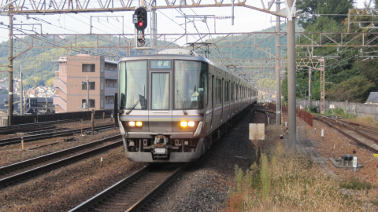

Picture
Sound
Movie
Blog
Simulator
Home
About
LCD
Download
おすすめの鉄道サイト

鉄道関係のサイトをまとめて載せています。
誰でも使用できる電車のアイコンがあります。当サイトにも使用させていただいております(ブラウザのタブのところ)
RailSearch 鉄道/電車/交通の検索&リンク集
鉄道関係のサイトが多くまとめられています。検索もできるので非常に便利です。
武蔵野の部屋
車内LCDを再現できる「トレインビジョン再現スクリプト」が配布されています。
RealRailway.com:鉄道エンターテイメントサイト
運転シミュレーターをプレイできます。
武蔵野日記帳
「武蔵野の部屋」のブログがこちらに変更されました。